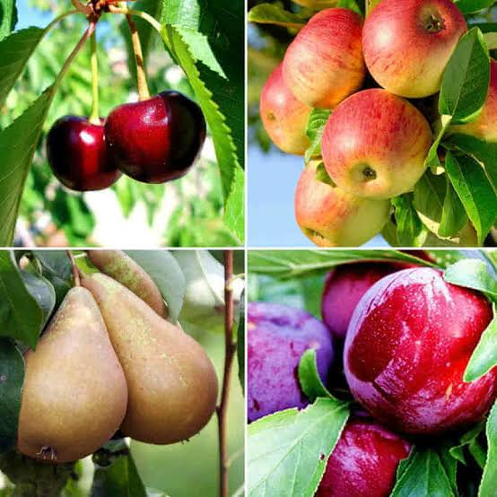

Fraises & pêches
du Tarn-et-Garonne


⟹ Produits du Terroir ⟸
Le Tarn-et-Garonne est souvent surnommé le « verger du Sud-Ouest ». Sur les terrasses alluviales de la Garonne, du Tarn et de l’Aveyron, les arboriculteurs et maraîchers produisent une gamme exceptionnelle de fruits : pommes, prunes, chasselas, kiwis, melons… et, parmi les plus attendus de la saison, les fraises au printemps et les pêches en été.

La pêche (Prunus persica) est originaire de Chine, où elle était cultivée il y a plusieurs millénaires. Elle a gagné la Perse — d’où son nom latin — puis le monde romain, qui l’a diffusée en Gaule. Sous Louis XIV, les célèbres « murs à pêches » de Montreuil en faisaient un fruit de luxe. Dans le Sud-Ouest, le climat chaud et lumineux a permis sa culture en plein champ.
En Tarn-et-Garonne, les pêchers se sont développés sur les terres fertiles situées entre le Tarn et l’Aveyron et sur les moyennes terrasses de la Garonne, aux côtés des pruniers et du chasselas. On y cultive pêches blanches, pêches jaunes, nectarines et brugnons, ainsi que des variétés plates et la traditionnelle pêche de vigne, autrefois plantée en bout de rangs dans les vignobles.
La fraise cultivée moderne est née au XVIIIe siècle, du croisement d’une fraise du Chili rapportée en France par l’explorateur Amédée-François Frézier en 1714 et d’une fraise de Virginie. Bien plus parfumée que la petite fraise des bois, elle s’est diffusée dans toutes les régions au climat favorable, dont le grand bassin de production du Sud-Ouest.
Dans le département, la fraise est cultivée en plein champ, sous tunnels et sous serres, notamment autour de Montauban, où certaines exploitations atteignent plus de 100 tonnes par an. Ces techniques permettent d’étaler la récolte d’avril jusqu’à l’automne grâce aux variétés remontantes. Le Tarn-et-Garonne s’inscrit ainsi dans le grand bassin fraisier du Sud-Ouest, aux côtés du Lot-et-Garonne et du Périgord.
Ces productions reposent sur une ressource essentielle : l’eau. L’irrigation, rendue possible par les grandes rivières du département, est indispensable aux fruits et légumes. Les arboriculteurs doivent aussi composer avec les aléas climatiques — gel printanier, grêle, canicules — qui peuvent réduire les récoltes, et réfléchissent à l’évolution de leurs vergers vers des espèces plus méditerranéennes comme la pêche et l’abricot.
La fraise et la pêche illustrent la force d’une filière fruitière performante et tournée vers l’export, mais aussi profondément attachée aux circuits courts. Vente à la ferme, marchés de plein vent, magasins de producteurs : de nombreux arboriculteurs proposent leurs fruits cueillis à maturité, gage de saveur.
La saison est rythmée : les premières Gariguette annoncent le printemps dès avril, les fraises remontantes prennent le relais tout l’été, tandis que les pêches et nectarines se succèdent de juin à septembre. Ces fruits gorgés de soleil se savourent nature, en salade, en tarte ou en soupe au vin.
Gariguette : fraise allongée, rouge vif et acidulée, créée par l’INRA en 1976 : c’est la fraise précoce du printemps.
Ciflorette et Charlotte : fraises sucrées et parfumées ; la Charlotte, remontante, se récolte jusqu’à l’automne.
Mara des bois : fraise remontante au goût de fraise des bois, très appréciée en dessert.
Pêche de vigne : petite pêche à chair rouge sanguine, au parfum intense, récoltée en fin d’été.
Pêches blanches, jaunes et nectarines : chair fondante ou plus ferme, peau duveteuse ou lisse : la diversité du verger du Sud-Ouest.
Fraises et pêches se trouvent directement chez les producteurs et sur les marchés du département, d’avril à septembre.
Montauban grands marchés de la préfecture et nombreuses exploitations fraisières en périphérie, avec vente directe.
Vallées du Tarn et de l’Aveyron terres fertiles où se concentrent les vergers de pêchers et les ventes à la ferme.
Moissac et Castelsarrasin marchés de plein vent du cœur fruitier du département, riches en fruits cueillis à maturité.
Fête des Fruits et des Saveurs à Moissac en septembre, la vitrine de tout le verger tarn-et-garonnais.